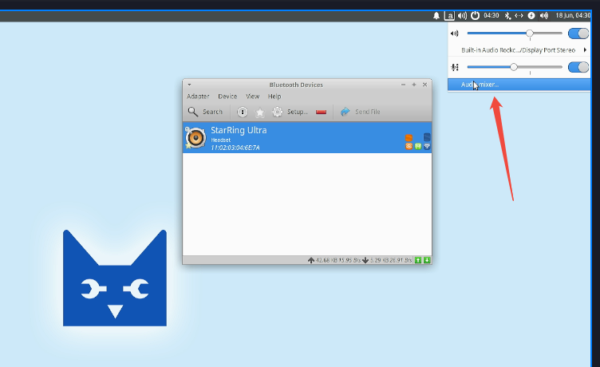
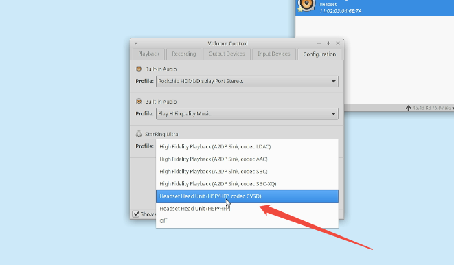
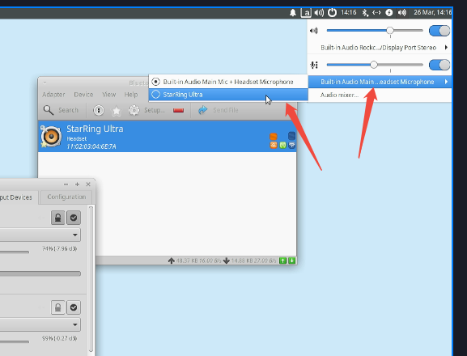

测试系统是ubuntu20.04，默认的pulseaudio不支持hsp/hfp协议，不能录音，所以要改成pipewire。
# 安装桌面端蓝牙管理套件
sudo apt update
sudo apt-get install bluetooth
sudo apt-get install blueman
# 安装pipewire
sudo add-apt-repository ppa:pipewire-debian/pipewire-upstream
sudo apt update
sudo apt install pipewire
sudo apt install libspa-0.2-bluetooth
sudo apt install pipewire-audio-client-libraries
sudo apt install gstreamer1.0-pipewire libpipewire-0.3-{0,dev,modules} libspa-0.2-{bluetooth,dev,jack,modules} pipewire{,-{audio-client-libraries,pulse,bin,tests}}
#停用pulseaudio
systemctl --user --now disable pulseaudio.{socket,service}
systemctl --user mask pulseaudio
#复制配置文件
sudo cp -vRa /usr/share/pipewire /etc/
#启用pipewire
systemctl --user --now enable pipewire{,-pulse}.{socket,service}
#重启生效
sudo reboot
使用pactl info查看信息，Server Name是pipewire，可以进行下一章的配置。
Server String: /run/user/1000/pulse/native
Library Protocol Version: 33
Server Protocol Version: 35
Is Local: yes
Client Index: 69
Tile Size: 65472
User Name: cat
Host Name: lubancat
Server Name: PulseAudio (on PipeWire 1.0.7)
Server Version: 15.0.0
Default Sample Specification: float32le 2ch 48000Hz
Default Channel Map: front-left,front-right
Default Sink: alsa_output.platform-hdmi-sound.HDMI__hw_rockchiphdmi__sink
Default Source: alsa_input.platform-rk809-sound.HiFi__hw_rockchiprk809co__source
Cookie: f9fe:63a5
恢复使用pilseaudio：
systemctl --user --now enable pulseaudio.{socket,service}
systemctl --user unmask pulseaudio
systemctl --user --now enable pulseaudio.{socket,service}
连接蓝牙后，点击那个audio mixer进入音频设置

然后点击configuration，会发现蓝牙耳机的hsp/hfp协议可以正常启用了，选中之后蓝牙耳机就只能录音了，不能播放，想要播放功能需要改回上面的那些播放协议，比如ldac。

如下图修改录音设备，选中蓝牙耳机，就可以用系统内置的sound recorder软件测试录音了
